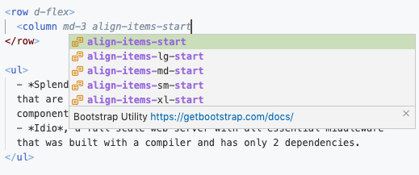

h1 { font-family: 'Mr De Haviland' }
#![##Web Development] Web Development With NodeTools
The primary aim of _NodeTools_ is to help package makers with back-end packages. `NodeTools 2` will be based on the groundwork from the first version, and facilitate rapid web development, via more advanced tools such as:
- *Splendid*, a static-website compiler for hybrid HTML + JSX pages that are written as static HTML, and only include dynamic components where they need to be. There's also great support for Bootstrap:

- *Idio*, a full-scale web-server with all essential middleware that was built with a compiler and has only 2 dependencies and provides a front-end middleware for serving JSX and `node_modules`.
We plan to release *Irio* which is the combination of the two of the above to become world's tidiest, most intuitive, professional web-framework. But while the work is in progress, let me just give a few hints of how to develop client-side JS code and compile it with _Closure_, based on some packages that I've made.